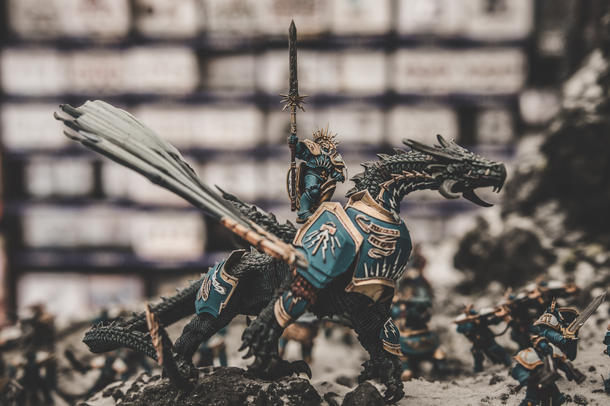

Dungeons and Dragons is rapidly becoming the most popular tabletop role-playing game in America. With incredibly high production DnD podcasts and tv shows becoming more and more common, peoples' standards are becoming higher. Sound effects and awesome music elevate the experience ten-fold. You and all your friends need a way to have a shared soundboard you can pull up on your phone to use during all of your DnD sessions.
"In the same way your heart feels and your mind thinks, you, mortal beings, are the instrument by which the universe cares. If you choose to care, then the universe cares. If you don't, then it doesn't."
- The Void (Brennan Lee Mulligan), Fantasy High S1E17